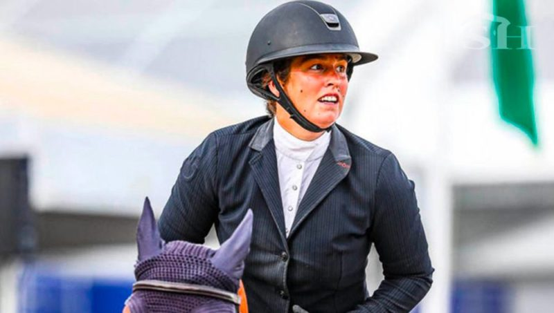

Sanction alourdie pour Charlotte Bettendorf!
La cavalière luxembourgeoise déjà suspendue 18 mois par le CDD (Le Conseil de Discipline contre le Dopage) pour manquements trop nombreux a des contrôles anti dopages.(27/11/2024)
Plus d'infos...La cavalière luxembourgeoise déjà suspendue 18 mois par le CDD (Le Conseil de Discipline contre le Dopage) pour manquements trop nombreux a des contrôles anti dopages.(27/11/2024)
Plus d'infos...Des cas de rhinopneumonie équine ont été signalés en France, entraînant l'annulation de certaines compétitions. Le RESPE insiste sur l’importance d’appliquer des mesures de biosécurité, et rappellent que la surveillance sanitaire doit s’accompagner de mesures préventives visant à réduire les risques de diffusion et de transmission de maladies.(20/11/2024)
Plus d'infos...La France a remporté la Coupe des Nations FEI 2024 à Boekelo, aux Pays-Bas, avec une performance exceptionnelle.(13/10/2024)
Plus d'infos...La poisse jusqu’au bout pour la France… Alors que le cheval de Simon Delestre était écarté à cause de coliques la veille de la finale, les quatre Mousquetaires se sont battus bec et ongles, jusqu’à la chute de Kevin Staut/Beau de Laubry Z. Finale éprouvante, selon un nouveau format, où l’Allemagne, sur la vague du succès olympique bat les Pays-Bas dans la dernière ligne droite, devant la Suède, 3è..(07/10/2024)
Plus d'infos...Depuis plusieurs années, France Galop et Racing TV sont liés par un contrat de diffusion en France
portant désormais sur 156 courses anglaises et irlandaises, dont 120 courses de niveau Groupe.
Ces courses sont proposées aux parieurs français. Racing TV International distribue des courses
britanniques et irlandaises dans une quarantaine de pays, la France étant l’un de ses principaux marchés.
Charlotte Fry et Glamourdale.C’était écrit dans les étoiles après leur victoire en Grand Prix du monde de dressage FEI de style libre Spécial lundi 10 août 2022, et J.O 2024. Elle a dit "J'ai profité de chaque seconde de cette reprise! C'est un honneur d'être ici aux Jeux olympiques de Paris. Cette reprise du Grand Prix, nous l'avons déroulée maintes et maintes fois! C'était une épreuve importante car elle sert de qualification pour la finale par équipes et la Reprise Libre en Musique."
| Dates | Description |
|---|---|
| 01.01.2024 | France Galop Live |
| 31.03 - 17.11 | L'Hippodrome en Famille |
| 09.05 - 04.07 | JeuXdi by ParisLongchamp |
| 12.05 | Emirates Poules d'Essai |
| 18.05 - 19.05 | Grand Steeple-Chase de Paris |
| 02.06 | Qatar Prix du Jockey Club |
| 16.06 | Prix de Diane Longines |
| 13.07 | La Garden Party - Grand Prix de Paris |
| 30.07 - 25.08 | Meeting de Deauville Barrière |
| 15.09 | Qatar Arc Trials |
| 05.10 - 06.10 | Qatar Prix de l'Arc de Triomphe |
| 16.11 - 17.11 | Les 48H de l'Obstacle |
Pour plus d'informations sur les événements passés:
cliquez ici| Date | Description |
|---|---|
| mar. 3 décembre | Hippodrome de DEAUVILLE-LA TOUQUES 13h45 Plat : 8 8 courses |
| mer. 4 décembre | Hippodrome de DEAUVILLE-LA TOUQUES 16h30 Plat : 8 8 courses |
| sam. 7 décembre | Hippodrome de CHANTILLY 12h00 Plat : 8 8 courses |
| dim. 8 décembre | Hippodrome d’AUTEUIL 12h00 Obstacle : 9 9 courses |
| mar. 10 décembre | Hippodrome de CHANTILLY 11h45 Plat : 8 8 courses |
| jeu. 12 décembre | Hippodrome de CHANTILLY 11h45 Plat : 9 9 courses |
| ven. 13 décembre | Noël à l'Hippodrome de Deauville-La Touques Hippodrome de DEAUVILLE-LA TOUQUES 14h00 Plat : 8 8 courses |
| sam. 14 décembre | Noël à l'Hippodrome de Deauville-La Touques Hippodrome de DEAUVILLE-LA TOUQUES 16h30 Plat : 8 8 courses |
| mer. 18 décembre | Noël à l'Hippodrome de Deauville-La Touques Hippodrome de DEAUVILLE-LA TOUQUES 16h00 Plat : 8 8 courses |
| jeu. 19 décembre | Noël à l'Hippodrome de Deauville-La Touques Hippodrome de DEAUVILLE-LA TOUQUES 13h45 Plat : 8 8 courses |
| ven. 20 décembre | Hippodrome de CHANTILLY 12h30 Plat : 8 8 courses |
| lun. 23 décembre | Noël à l'Hippodrome de Deauville-La Touques Hippodrome de DEAUVILLE-LA TOUQUES 14h00 Plat : 8 8 courses |
| jeu. 26 décembre | Hippodrome de CHANTILLY 12h15 Plat : 8 8 courses |
| ven. 27 décembre | Noël à l'Hippodrome de Deauville-La Touques Hippodrome de DEAUVILLE-LA TOUQUES 14h00 Plat : 8 8 courses |
| sam. 28 décembre | Noël à l'Hippodrome de Deauville-La Touques Hippodrome de DEAUVILLE-LA TOUQUES 15h45 Plat : 8 8 courses |
| lun. 30 décembre | Hippodrome de CHANTILLY 12h30 Plat : 8 8 courses |
Pour plus d'informations sur les événements à venir:
cliquez ici| Lien | Description |
|---|---|
| Cheval Magazine | Un site dédié aux passionnés d'équitation, avec des actualités, des conseils, et des ressources pour les cavaliers de tous niveaux. |
| ffe.com | Fédération Française d'Équitation (FFE) : Le site officiel de la Fédération Française d'Équitation, qui propose des informations sur les compétitions, les centres équestres, et les licences. |
| Horse & Hound | Une plateforme britannique qui couvre l'actualité du monde équestre, les compétitions, et des conseils pour les propriétaires de chevaux. |
| Cavalière Life | Un blog français tenu par des passionnés d'équitation, qui propose des articles sur la pratique, l'équipement, et les soins aux chevaux. |
| Equidia | Une chaîne spécialisée dans les sports équestres et les courses hippiques, avec des émissions, des reportages, et des retransmissions d'événements équestres. |
| TikTok 🐴 | Équitation et camaraderie : vidéos inspirantes sur l'amitié et l'équitation. |